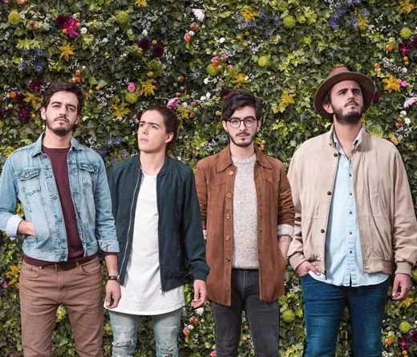

Morat es una banda colombiana de pop-folk formada en Bogotá. La banda está compuesta por Simón Vargas, Juan Pablo Isaza, Juan Pablo Villamil y Martín Vargas. Sus éxitos incluyen canciones como "Cómo te atreves" y "Besos en guerra", que han resonado en toda América Latina y España.
Morat ha colaborado con artistas como Juanes, Alejandro Fernández, y Ela Taubert, consolidando su presencia en la escena musical internacional. Con su estilo único y letras emotivas, han conquistado a un público diverso y apasionado.